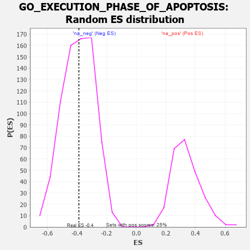

| | | Dataset | 7d |
| Phenotype | NoPhenotypeAvailable |
| Upregulated in class | na_neg |
| GeneSet | GO_EXECUTION_PHASE_OF_APOPTOSIS |
| Enrichment Score (ES) | -0.38785183 |
| Normalized Enrichment Score (NES) | -0.99295455 |
| Nominal p-value | 0.5053619 |
| FDR q-value | 0.87955123 |
| FWER p-Value | 1.0 |
Table: GSEA Results Summary
 Fig 1: Enrichment plot: GO_EXECUTION_PHASE_OF_APOPTOSIS
Fig 1: Enrichment plot: GO_EXECUTION_PHASE_OF_APOPTOSIS
Profile of the Running ES Score & Positions of GeneSet Members on the Rank Ordered List
| PROBE | GENE SYMBOL | GENE_TITLE | RANK IN GENE LIST | RANK METRIC SCORE | RUNNING ES | CORE ENRICHMENT | | 1 | CASP6 | | | 145 | 1.300 | 0.0698 | No |
| 2 | BAX | | | 387 | 0.711 | 0.0877 | No |
| 3 | HTRA2 | | | 527 | 0.621 | 0.1123 | No |
| 4 | HMGB2 | | | 892 | 0.507 | 0.1009 | No |
| 5 | DEDD2 | | | 999 | 0.484 | 0.1203 | No |
| 6 | AKT1 | | | 1040 | 0.476 | 0.1475 | No |
| 7 | AIFM1 | | | 1072 | 0.469 | 0.1754 | No |
| 8 | XKR6 | | | 2655 | 0.205 | -0.0098 | No |
| 9 | ERN2 | | | 3160 | 0.129 | -0.0645 | No |
| 10 | HSF1 | | | 3718 | 0.039 | -0.1319 | No |
| 11 | XKR4 | | | 4466 | -0.087 | -0.2200 | No |
| 12 | CASP1 | | | 4932 | -0.185 | -0.2659 | No |
| 13 | CASP7 | | | 5038 | -0.206 | -0.2652 | No |
| 14 | TOP2A | | | 5216 | -0.250 | -0.2706 | No |
| 15 | CASP8 | | | 5678 | -0.369 | -0.3035 | No |
| 16 | MADD | | | 5686 | -0.371 | -0.2793 | No |
| 17 | STK24 | | | 6550 | -0.684 | -0.3415 | Yes |
| 18 | RFFL | | | 6674 | -0.749 | -0.3062 | Yes |
| 19 | DNM1L | | | 6963 | -0.913 | -0.2806 | Yes |
| 20 | RNF34 | | | 7040 | -0.963 | -0.2248 | Yes |
| 21 | CASP2 | | | 7442 | -1.322 | -0.1857 | Yes |
| 22 | BOK | | | 7715 | -1.817 | -0.0968 | Yes |
| 23 | CASP3 | | | 7747 | -1.902 | 0.0282 | Yes |
Table: GSEA details [plain text format]

Fig 2: GO_EXECUTION_PHASE_OF_APOPTOSIS: Random ES distribution
Gene set null distribution of ES for GO_EXECUTION_PHASE_OF_APOPTOSIS